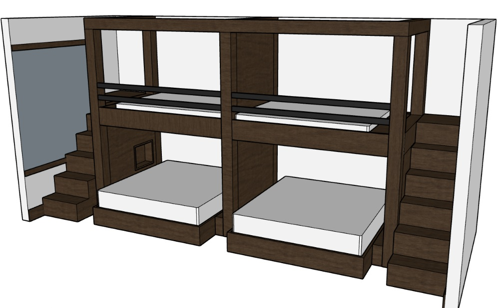
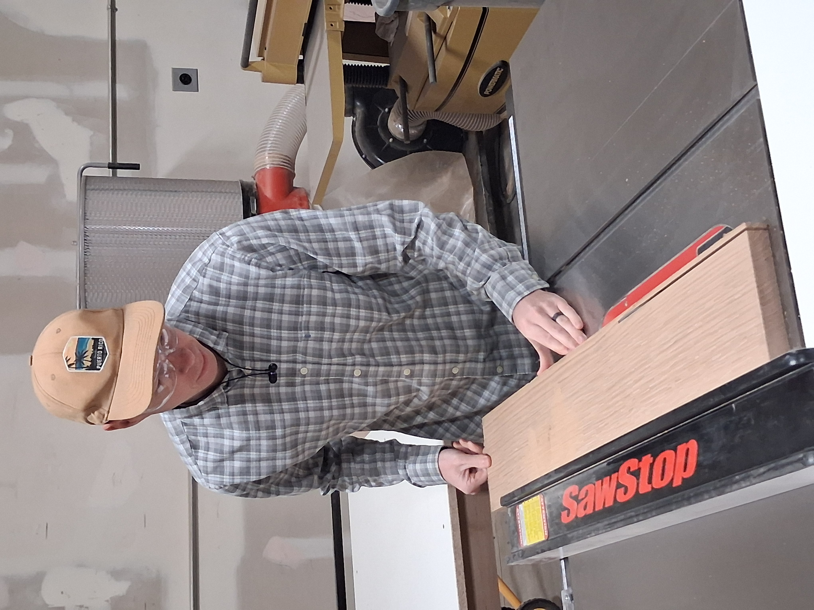
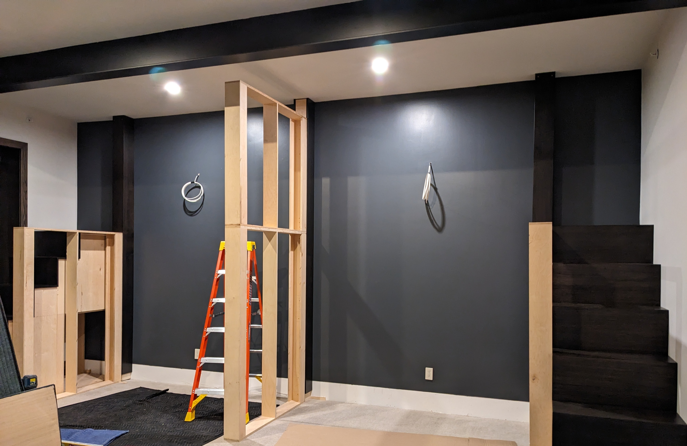
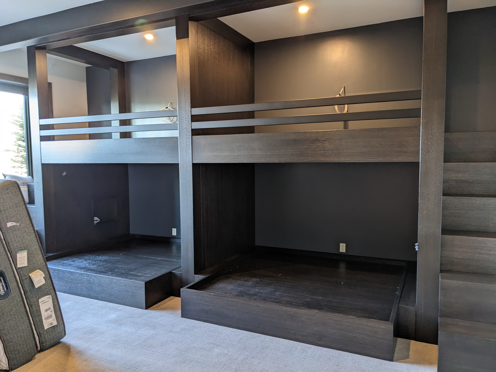

Creating Built-In Bunks
Custom built-in bunks not only add to the sleeping capacity of your home, they look amazing while doing it. Let's go over each step in the process, from the concept to completion.
Custom built-in bunks not only add to the sleeping capacity of your home, they look amazing while doing it. Let's go over each step in the process, from the concept to completion.

So you decide you might want some bunks in a room. Sometimes you've seen something that you want to emulate, other times you have your own idea — usually a combination of both! How many beds do you want, how are they oriented, stairs or a ladder, metal or wood rollout rails, cubbies, drawers, lighting, outlets, etc? Do you want stained wood, painted, or some of each? Send me a sketch, inspiration drawing, or even a description of what you want.
We'll take your information and fit it to your space and come up with a 3D rendering. Seeing it this way helps you make the small tweaks to make it your own. Do we ever get it right on the first try? Maybe someday! It often takes a few drawings to get everything dialed in. Eventually we get the drawings to your liking and move on to the build.

We take the drawings and generate a cut-list, materials are ordered, and we fire up the machines. We cut, shape, and join the wood per the drawing, selecting wood to keep the best boards in view. Once everything has been pre-assembled we give it a final sand and it heads into finish where it gets stained and/or clear-coated or painted.

The bunk is delivered to the site and we get to work assembling it and getting it into place. We cut the pieces to follow the slight bumps in your wall and account for the variance in the level of the floor. Once everything is in we fill any nail holes we made and wipe everything clean.

Now you invite people over to use and adore them!